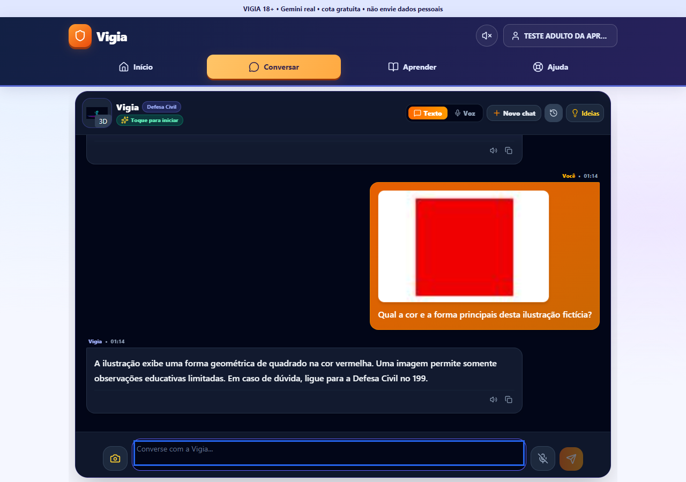
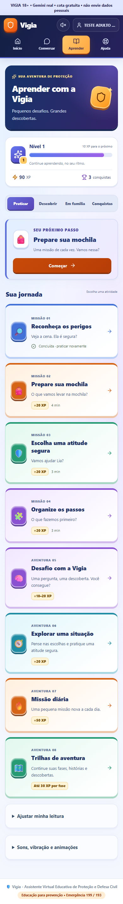
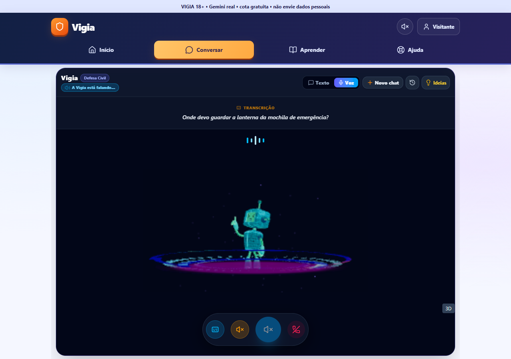
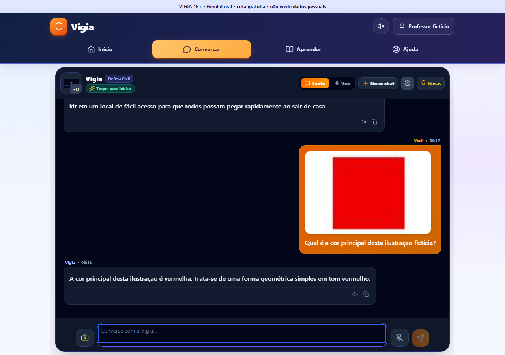
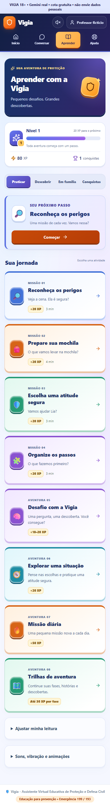
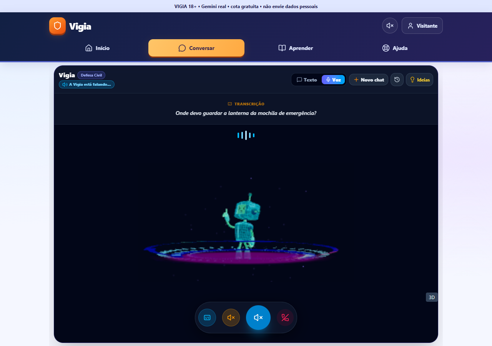

Vigia 18+ — Gemini real, modalidade gratuita
Validação de 13 de outubro de 2026. Visual, cores, missões e conquistas preservados. Alterações de público restritas ao acesso 18+, permissões próprias e informações de privacidade.
Estado da versão
Publicado e validado online. A revisão do aplicativo no Render é d5140fd2b8be0b6c962367247d4112dd792174b5; publicação dep-db6r00ou01pc73b8c3r0, de 13/10/2026. Roteiro funcional validado no Chrome, em computador e celular emulado, com voz sintética de adulto. Confirme o microfone e o aparelho físico da apresentação antes do evento.
Abrir versão publicada · Abrir versão local testada
Texto, imagens e transcrição usam Gemini 3.5 Flash-Lite. A síntese foi migrada para Gemini 3.8 Flash-Lite TTS, modelo estável disponível na modalidade gratuita, após falhas do TTS Preview anterior. Somente modelos verificados na modalidade gratuita, sem fornecedor pago alternativo. Voz por turnos, com transcrição, resposta e reprodução; há espera entre fala e resposta.
Correções desta etapa
- Declaração 18+ na interface e no servidor; perfis antigos vinculados a menores não conseguem liberar Gemini por essa declaração. Não representa verificação de identidade ou idade.
- Consentimento explícito por conta; texto, imagem escolhida e voz enviados somente pelo servidor, com chave privada. Dados pessoais, confidenciais e conteúdo de menores não devem ser enviados ao serviço gratuito.
- Correção do reconhecimento de sessão no login e do cabeçalho JSON duplicado. Ao abrir novamente o login, campos e senha são limpos, evitando credenciais de outra conta.
- Histórico e progresso continuam isolados por conta; cliques repetidos não duplicam mensagem ou recompensa.
- Convites da Sala Segura entre participantes adultos exigem aceite do destinatário. Declaração de idade não concede papel de professor ou responsável.
- Atividades próprias em família somam XP uma vez. Turmas adultas exigem professor verificado e aceite; conversas privadas não entram no painel.
- Falhas da IA aparecem como indisponibilidade. Orientações educativas não inventam pontuação ou classificação de risco. Emergências usam orientação direta consistente entre texto e voz.
- Voz remove envelopes JSON da resposta efetivamente gerada. Síntese pede leitura explícita e repete uma geração incompleta no máximo uma vez; cota e bloqueio de segurança não são repetidos.
- Publicação aceita voz real conforme o estado do servidor. Microfone, áudio e conexão são liberados ao negar permissão, encerrar ou ocorrer falha.
Resultados locais atuais
86 verificações automatizadas passaram: 31 de regressão, 32 de integração de IA com simulações, 12 de regras no emulador, 5 de configuração da publicação e 6 de permissões adultas. Compilação de apresentação, compilação de publicação e checagem final de tipos passaram. Auditoria das dependências de produção: zero vulnerabilidades informadas.
18 verificações de interface passaram em Chrome no computador e celular emulado; 2 verificações adicionais de voz real pelo navegador passaram com microfone fictício e fala sintética de adulto. A transcrição, resposta e síntese chamaram o fornecedor real, não um fornecedor simulado.
| Verificação | Resultado | Observação |
|---|
| desktop: menor declarado não recebe acesso à interface | Passou | |
| desktop: acesso adulto e login fictício com interface preservada | Passou | |
| desktop: chat real e clique repetido produzem uma única mensagem | Passou | |
| desktop: abrir histórico conserva conteúdo, título e resposta | Passou | |
| desktop: imagem selecionada recebe análise real na interface | Passou | |
| desktop: perda de rede aparece como falha e não concede XP | Passou | |
| desktop: microfone negado encerra captura e conexão | Passou | |
| desktop: jornada e conquistas continuam acessíveis sem carregar Escape | Passou | |
| desktop: logout e troca de conta não exibem histórico privado anterior | Passou | |
| mobile: menor declarado não recebe acesso à interface | Passou | |
| mobile: acesso adulto e login fictício com interface preservada | Passou | |
| mobile: chat real e clique repetido produzem uma única mensagem | Passou | |
| mobile: abrir histórico conserva conteúdo, título e resposta | Passou | |
| mobile: imagem selecionada recebe análise real na interface | Passou | |
| mobile: perda de rede aparece como falha e não concede XP | Passou | |
| mobile: microfone negado encerra captura e conexão | Passou | |
| mobile: jornada e conquistas continuam acessíveis sem carregar Escape | Passou | |
| mobile: logout e troca de conta não exibem histórico privado anterior | Passou | |
| Verificação | Resultado | Observação |
|---|
| Captura sintética pelo navegador, transcrição, resposta real e reprodução de áudio | Passou | |
| Encerrar libera microfone, áudio e WebSocket; mantém transcrição no histórico | Passou | |
| Verificação | Resultado | Observação |
|---|
| declaração adulta não concede papel de professor ou responsável | Passou | |
| convite só pode envolver contas com acesso adulto declarado | Passou | |
| contato aceita; remetente e terceiro não aprovam nem enviam mensagens | Passou | |
| mensagem é idempotente, bloqueio impede envio e role permanece restrito | Passou | |
| conclusão própria em família gera 15 XP uma vez e não altera outra conta | Passou | |
| turma adulta exige professor verificado e aceite, sem compartilhar histórico privado | Passou | |
32 verificações online passaram
Dez verificações de Firebase e permissões, vinte de interface em desktop e celular emulado e duas de voz real no navegador. Contas aleatórias fictícias e professor fictício previamente verificado no novo projeto. Foram validados login, histórico após recarregar, imagem real, falha de rede, permissão de microfone negada, missão com XP e efeitos, troca de conta e Sala Segura. A fala e a resposta da voz são salvas no histórico ao encerrar; recursos do microfone e áudio são liberados. Nenhum dado real de menores nem serviço pago foi usado.
| Verificação | Resultado | Observação |
|---|
| publicação é Gemini real, 18+, Firebase cloud, sem simulação | Passou | |
| IA exige acesso adulto e consentimento; declaração não concede papel escolar | Passou | |
| Firestore nega perfis de terceiros, lista de usuários e elevação de papel | Passou | |
| conversa e anexo persistem exclusivamente na conta proprietária | Passou | |
| Sala Segura exige destinatário e nega remetente ou terceiro aprovando | Passou | |
| mensagem repetida é única; autoria e participantes são protegidos | Passou | |
| bloqueio impede envio e denúncias são privadas | Passou | |
| progresso soma uma recompensa em cliques repetidos e recusa outra conta | Passou | |
| professor fictício previamente verificado aprova turma adulta sem ver histórico privado | Passou | |
| arquivos privados permanecem inacessíveis e exclusão online incompleta é bloqueada | Passou | |
| Verificação | Resultado | Observação |
|---|
| desktop: acesso 18+ e menores declarados bloqueados | Passou | |
| desktop: cadastro/login adulto próprio e consentimento na publicação | Passou | |
| desktop: chat real e envio repetido não duplicam a pergunta | Passou | |
| desktop: histórico cloud persiste ao recarregar e não é sobrescrito | Passou | |
| desktop: imagem fictícia recebe análise real | Passou | |
| desktop: falha de rede informa indisponibilidade sem inventar resposta ou XP | Passou | |
| desktop: recusa do microfone limpa captura e conexão | Passou | |
| desktop: oito atividades diretas, missão, XP e efeitos preservados | Passou | |
| desktop: logout e troca de conta isolam o histórico privado | Passou | |
| desktop: Sala Segura lê e envia mensagem cloud a contato aprovado | Passou | |
| mobile: acesso 18+ e menores declarados bloqueados | Passou | |
| mobile: cadastro/login adulto próprio e consentimento na publicação | Passou | |
| mobile: chat real e envio repetido não duplicam a pergunta | Passou | |
| mobile: histórico cloud persiste ao recarregar e não é sobrescrito | Passou | |
| mobile: imagem fictícia recebe análise real | Passou | |
| mobile: falha de rede informa indisponibilidade sem inventar resposta ou XP | Passou | |
| mobile: recusa do microfone limpa captura e conexão | Passou | |
| mobile: oito atividades diretas, missão, XP e efeitos preservados | Passou | |
| mobile: logout e troca de conta isolam o histórico privado | Passou | |
| mobile: Sala Segura lê e envia mensagem cloud a contato aprovado | Passou | |
| Verificação | Resultado | Observação |
|---|
| Captura sintética pelo navegador, transcrição, resposta real e reprodução de áudio | Passou | |
| Encerrar libera microfone, áudio e WebSocket; entrada e resposta são salvas no histórico | Passou | |



Histórico de falhas durante a avaliação
As falhas iniciais de login, troca de conta e voz foram conservadas nos registros e corrigidas. O TTS Preview retornou gerações incompletas, inclusive online. A migração para 3.8 Flash-Lite TTS passou localmente e na publicação. A automação de navegador também foi ajustada para esperar o fim do cadastro, o foco dos campos e a confirmação de voz do servidor, antes de interagir. Isso não garante disponibilidade contínua do fornecedor.
A rodada direta de API abaixo terminou com 11 resultados positivos e uma falha de transporte na imagem. A imagem foi posteriormente validada localmente e online, em computador e celular emulado, identificando forma e cor. O registro inicial não foi alterado para ocultar a falha.
| Verificação | Resultado | Observação |
|---|
| Gemini real, público 18+, Firebase emulador e custo zero configurados | Passou | |
| acesso exige declaração adulta e consentimento de IA | Passou | |
| chat real produz orientação específica em português | Passou | |
| imagem real identifica ilustração escolhida, sem pontuação de risco | Falhou | fetch failed |
| voz Gemini gera WAV PCM24k real | Passou | |
| transcrição real reconhece fala sintética de adulto em português | Passou | |
| silêncio não inventa fala | Passou | |
| perfil infantil vinculado não pode se declarar adulto para liberar Gemini | Passou | |
| WebSocket real transcreve, responde e devolve áudio com ticket de uso único | Passou | |
| plano educativo real oferece passos e revisão, sem classificação ou pontuação de risco | Passou | |
| quiz real gera pergunta e opções educativas válidas | Passou | |
| arquivos privados permanecem fora da pasta pública | Passou | |
Roteiro curto validado localmente e online
- Abra a publicação alguns minutos antes do evento para aguardar o início do servidor gratuito. Se aparecer “Nova versão!”, use “Atualizar Agora”. Confirme 18+ e use sua própria conta adulta ou visitante. Leia o consentimento do Gemini; apresente somente conteúdo fictício, sem informação pessoal. As credenciais das contas aleatórias de teste ficam privadas e não foram publicadas; o cadastro/login foi exercitado na interface.
- Em Conversar, pergunte onde guardar a lanterna da mochila de emergência. Mostre a resposta gerada, recarregue a página e abra o histórico sem substituir a conversa.
- Anexe a ilustração fictícia
artifacts/gemini-synthetic-square.png e pergunte sua forma e cor. A resposta identifica um quadrado vermelho. - Permita o microfone apenas para a apresentação com um adulto e faça uma pergunta curta. O teste validou entrada de áudio sintético pelo Chrome, resposta, reprodução, encerramento e gravação do histórico; a qualidade do microfone físico ainda precisa ser conferida no aparelho da apresentação.
- Em Aprender, conclua Reconheça os perigos e mostre XP/conquistas. Essa missão só recompensa uma vez por conta. Sons e vibração podem ser desligados; vibração depende do aparelho. Escape continua pausado.
- Na Sala Segura, use duas contas adultas fictícias próprias, envie convite e aguarde aceite do destinatário. A mensagem não deve duplicar em cliques repetidos. Mostre o painel escolar somente com professor verificado; a operação foi validada com conta fictícia previamente verificada.
- Saia e entre em outra conta; a conversa anterior não deve aparecer.
Limitações e itens não testados
- Os fluxos do roteiro passaram no Chrome no computador e celular emulado; celular físico, Safari, autenticação social real e microfone físico não foram testados. Voz funciona por turnos, com espera pelo processamento.
- Gemini gratuito tem cotas. Render Free pode demorar a iniciar após inatividade. Não há disponibilidade garantida nem ativação automática de plano pago.
- Google pode usar conteúdo gratuito para melhoria e revisão humana. Não usar dados pessoais, confidenciais ou de menores; a aplicação exige 18+.
- Professores e responsáveis precisam de processo externo de verificação. Denúncias dependem de revisão manual. Exclusão integral de conta online continua bloqueada até existir processo de retenção aprovado.
- Banco novo no Firebase preserva o projeto anterior, sem migração automática das contas e históricos antigos. Os arquivos e alternativas de IA anteriores estão preservados; OpenAI pago e protótipo local estão inativos.
Fontes oficiais: Termos do Gemini, modalidades e preços, modelo de voz estável, geração de voz.
Capturas da versão efetivamente testada


